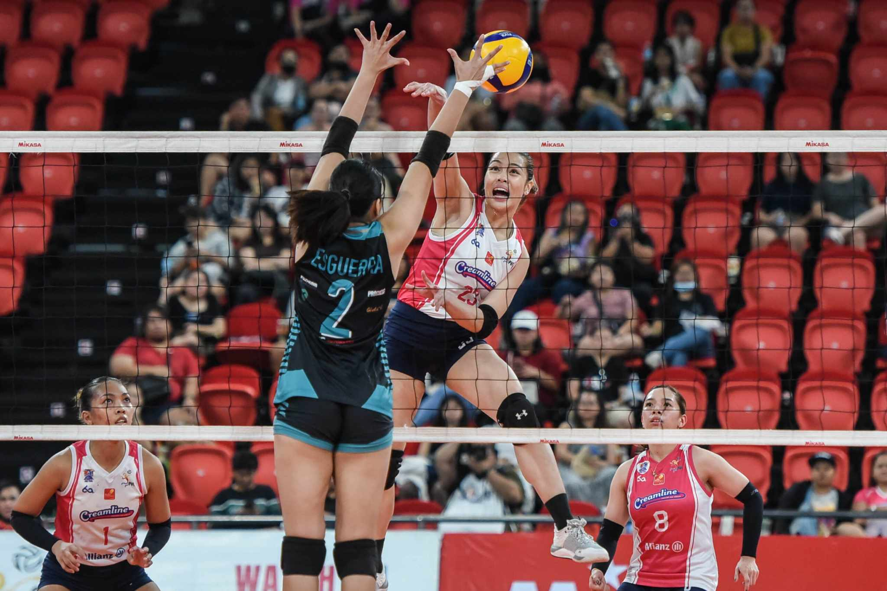

By: John Mark A. Estal-@JSports
Creamline looks sharp for its title defense in the Premier Volleyball League (PVL)
All-Filipino Conference and the Cool Smashers will take a perfect slate into the semifinals after
hiking their winning streak to 11 games.For coach Sherwin Meneses, the team can even be sharper.
By: Chrischan E. Dedicatoria-@JSports
MANILA, Philippines — Savannah Davison erupted for 29 points to help PLDT survive Petro Gazz in
five sets, 16-25, 25-17, 21-25, 25-15, 15-7, and wrap up their 2023 Premier Volleyball League (PVL)
second All-Filipino Conference on Tuesday evening at Philsports Arena.
By: Ritchelene E. Briones-@JSports

MANILA, Philippines — Gerflor ended its Premier Volleyball League (PVL) journey with a winless
record in 11 games before a new owner takes charge next season.
By: John Lloyd A. Estal-@JSports
MANILA, Philippines–Choco Mucho extended its winning streak to 10 after sweeping
Chery Tiggo, 25-16, 25-19, 25-23, in the Premier Volleyball League (PVL) on Tour Saturday
at University of San Agustin Gym in Iloilo City.
By: Shella Myt Hermogino-@JSports
The savior that came to the rescue of Gerflor in the Premier Volleyball League (PVL)
has finally named its newest squad—and it has quite a familiar ring to it.
By: Edrian Agua-@JSports
MANILA, Philippines — Ivy Lacsina relished her first practice as a
Nxled Chameleon with Japanese coach Taka Minowa and her
new teammates making her feel at home.
By: Lucena Briones-@JSports

MANILA, Philippines—Kim Kianna Dy is wasting no time in preparation for the
Premier Volleyball League (PVL)’s next season.
By: Markiel E. Ravelo-@JSports
MANILA, Philippines — After heartbreaks in his first two years with the
La Salle Green Archers, Evan Nelle’s UAAP career ended in vindication.
By: Mechel A. Estal-@JSports
MANILA, Philippines — The Philippine Olympic Committee (POC)
assured Gilas Pilipinas will retain its 19th Asian Games basketball
gold medal despite the failed doping test of Justin Brownlee.
By: Jasient Lea A. Estal-@JSports
MANILA, Philippines–Para swimmers Ernie Gawilan and Gary Bejino
bagged the first two medals for Team Philippines
in the 4th Asian Para Games in Hangzhou, China
By: Benigno III Jaranta-@JSports
MANILA, Philippines–Jerrold Mangliwan seized the first silver medal
for the Philippines in a sharp-witted tactical race on Tuesday in
the 4th Asian Para Games in Hangzhou, China.
By: Richelle Ann Briones-@JSports
MANILA, Philippines — Athletes who brought home medals in the
Hangzhou Asian Games are set to receive around P41.9 million worth of incentives
from the government, according to Malacañang.